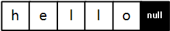
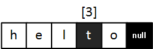

* Modern C++ 에서는 C언어 방식의 "C-Style-Strings"와, STL 라이브러리에 정의된 "std::string" 두가지 형태의 문자열을 제공합니다. 이번 포스팅에서는 C언어 방식인 C-Style-Strings에 대해 공부한 내용을 정리해 보고자 합니다.
* 개인적인 공부 내용을 기록하는 용도로 작성한 포스팅 이기에 잘못된 내용을 포함하고 있을 수 있습니다.
#1 C-Style-Strings
#2 std::cin & std::cin.getline
#3 C-Style-Strings 관련 함수들 - strlen() strcpy() strcat() strcmp()
#1 C-Style-Strings
C-Style-String 이란 마지막 원소에 null(종료자)를 포함하는 문자 배열입니다. 초기화 방식은 다음과 같습니다.
char myString[] = "hello";myString 문자열의 크기는 null을 포함한 6이 됩니다.

myString 은 배열이기에, 아래와 같이 중간의 원소를 인덱싱해서 변경할 수 있습니다.
myString[3] = t;
#2 std::cin & std::cin.getline
cin을 통해 문자열을 입력받고 출력해 보도록 하겠습니다. 문자열의 길이가 얼마나 클지 모르기에 임의로 255 크기의 배열을 선언해 주었습니다.
#include <iostream>
using namespace std;
int main(int argc, char* argv[]) {
cout << "plz input str : ";
char str[255];
cin >> str;
cout << str << endl;
return 0;
}하지만 이 방식은 권장하지 않습니다. 그 이유는 배열에 지정한 크기 이상의 문자를 입력할 시 오버플로우(OverFlow)현상이 발생하기 때문에 문자열이 잘리기 때문입니다. 또한, cin은 공백을 인식하지 못하기에 공백을 포함한 문자열을 입력 시 다음과 같이 공백 뒷부분이 출력되지 않습니다. (정확히는 스트림에 남아 있습니다.)
plz input str : nov log
nov
따라서 문자열을 입력받을 경우에는, cin보다 cin의 멤버함수인 cin.getline()을 사용하는 것이 좋습니다. cin.getline()은 cin과 달리 공백을 포함한 문자열을 입력받을 수 있으며, 두 번째 인자에 입력받을 문자열의 크기를 입력하기에, 오버플로우(OverFlow)현상을 방지할 수 있습니다.
[사용방법] cin.getline(배열명, 배열크기)#include <iostream>
using namespace std;
int main(int argc, char* argv[]) {
cout << "plz input str : ";
char str[255];
cin.getline(str,255);
cout << str << endl;
return 0;
}plz input str : nov log
nov log#3 C-Style-Strings 관련 함수들
C-Style-Strings를 사용 시 유용한 몇가지 함수들에 대해 정리하도록 하겠습니다. 들어가기에 앞서, C++ 언어에서 C-Style-Strings를 사용하기 위해선 <cstring> 헤더파일을 선언해 주어야 합니다.
#include <cstring>
1. strlen()
strlen 함수는 문자열의 길이를 출력해 줍니다. 이 때 문자열의 길이는 마지막의 null 문자가 제외된 길이입니다.
#include <iostream>
#include <cstring>
using namespace std;
int main(int argc, char* argv[]) {
char myString[] = "NOVLOG";
int length = strlen(myString);
cout << length << endl;
return 0;
}[출력결과] 6
2. strcpy()
strcpy 함수는 문자열을 다른 문자열 배열로 복사해 줍니다. 첫 번째 인자에는 저장할 문자열을 두 번째 인자에는 복사할 문자열을 넣어 줍니다.
[사용방법] strcpy(저장할 공간, 복사할 문자열)char myString[] = "NOVLOG";
char toString[6];
strcpy(toString, myString);
cout << toString << endl;NOVLOG그러나 strcpy 함수는 오버플로우(OverFlow)발생 위험이 있습니다. 따라서, strcpy_s 함수를 사용해 크기를 지정해 주는 것이 좋습니다.
strcpy_s(toString, 6, myString);
3. strcat()
strcat 함수는 한 문자열을 다른 문자열에 붙여 주는 역할을 하는 함수입니다.
[사용방법] strcat(원본 문자열, 이어 붙일 문자열)다음 코드는 strcat함수를 이용해 toString 문자열에 myString 문자열을 이어 붙인 예제입니다.
char myString[] = "LOG";
char toString[6] = "NOV";
strcat(toString,myString);
cout << toString << endl;NOVLOG
4. strcmp()
문자열을 비교할 때 흔히 하는 실수가 아래와 같이 비교 연산자 (==)을 이용해 문자열을 비교하는 것인데, 이는 문자열에 저장된 문자 배열을 비교하는 것이 아닌 문자열의 시작 주소를 비교하는 것이기에 옳바른 결과를 출력하지 못합니다.
char myString1[] = "NOV";
char myString2[] = "NOV";
if (myString == toString) {
cout << "same" << endl;
}
else {
cout << "diffrent" << endl;
}diffrent
따라서 문자열을 비교할 때는 strcpm() 함수를 사용하면 됩니다. 문자열이 같을 경우에는 0을 같지 않을 경우에는 -1을 반환합니다.
[사용방법] strcmp(비교문자열1, 비교문자열2)char myString1[] = "NOV";
char myString2[] = "NOV";
if (strcmp(myString1,myString2) == 0) {
cout << "same" << endl;
}
else {
cout << "diffrent" << endl;
}same이상으로 C언어 문자열에 대해 알아 보았습니다. 다음 포스팅 에서는 strlen , strcpy , strcat , strcmp 함수를 직접 구현해 보도록 하겠습니다.
이어지는 포스팅 ... [C/C++] strcpy strlen strcmp strcat _ 구현코드